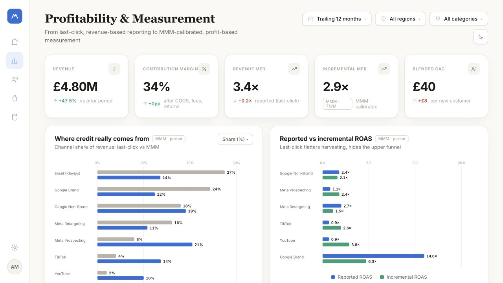

Led KPI design, analysis and process changes around workforce utilisation and first-time fix performance.
COMMERCIAL DATA ANALYSIS
I use data to show where margin is under pressure, why productivity is changing and which process improvements are worth making.
Most recently at Wates Group, I led SQL and Power BI analysis across 22 contracts and £50m+ in annual cost activity, turning operational evidence into actions for Finance, Commercial and Operations teams.
SELECTED BUSINESS OUTCOMES
Increased the proportion of workstreams covered by standardised contract reporting.
Reconciled source data and aligned reporting definitions, while maintaining 98% data accuracy.
Streamlined validation so recurring reporting required less manual checking.
Experience
2023–2026Finance Data Analyst
Wates Group · London
- Focused commercial attention on margin risk. Identified margin pressure across 100+ Schedule of Rates codes by comparing costs and revenue by contract and trade, prompting reviews of underperforming workstreams and supporting rate-renegotiation priorities.
- Increased productivity by 10%. Led the creation of productivity KPIs, built the SQL pipeline and Power BI reporting, tested hypotheses on unproductive time and implemented process changes that also raised first-time fix performance.
- Extended standardised reporting coverage by 15%. Owned SQL and Power BI reporting across 22 contracts and £50m+ in annual cost activity, making workstream performance easier to compare.
- Improved supplier exception handling. Analysed 100,000+ invoice records across throughput, accuracy and intervention rates, informing targeted changes to supplier-validation rules and exception handling.
- Reduced reporting discrepancies by 20% while maintaining 98% accuracy. Reconciled sources in SQL and agreed consistent reporting definitions with Finance and Operations.
- Reduced manual review time by 25%. Streamlined validation and presented findings to commercial and operational stakeholders for performance reviews and variance investigation.
Scale and analytical foundation
Built Power BI semantic models containing 5m+ records and defined 30+ KPIs across profitability, productivity, costs and forecast variance, enabling consistent comparison across contracts.
Data Analyst Intern
National Information Technology Authority–Uganda · Kampala
Reduced manual data preparation time by 20% using SQL extraction and validation. Supported programme dashboards and documented repeatable reporting processes.
Data Analyst Intern
DotSavvy Africa · Nairobi
Analysed behaviour with Google Analytics and Python, identifying UX improvements associated with a 25% increase in session duration and page views. Built Streamlit dashboards to help stakeholders explore engagement trends.
Selected work
All projects ↗Independent projects. These are actual dashboard captures; the figures shown are demonstration data.

Marketing profitability dashboard
Compares reported and incremental return on advertising spend, contribution margin and acquisition cost. Built to examine which channels deserve credit before allocating budget.
Get in touch
For commercial data analyst roles and conversations about the business outcomes shown here.
amanimulira@gmail.com ↗Download CV ↓